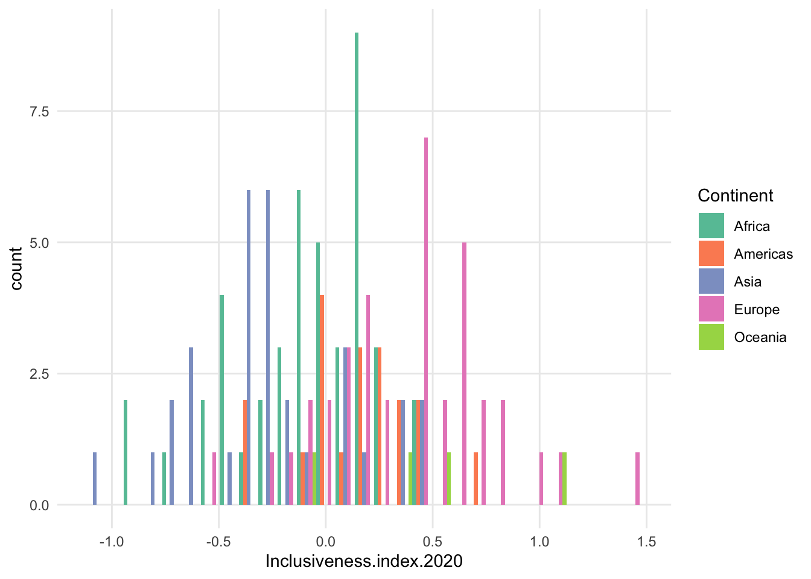
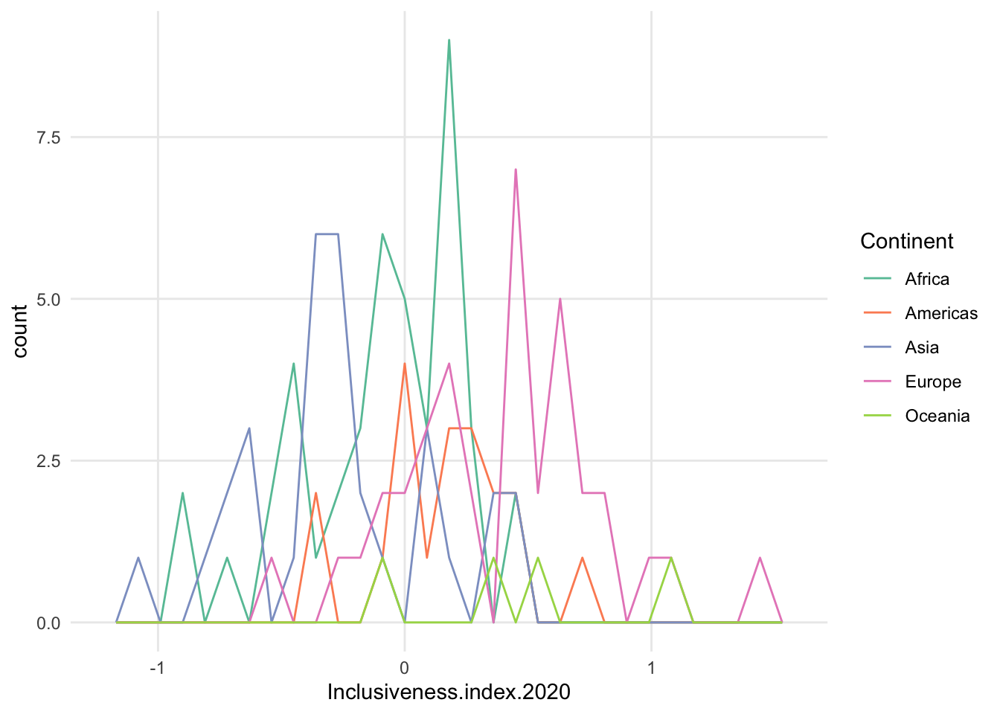
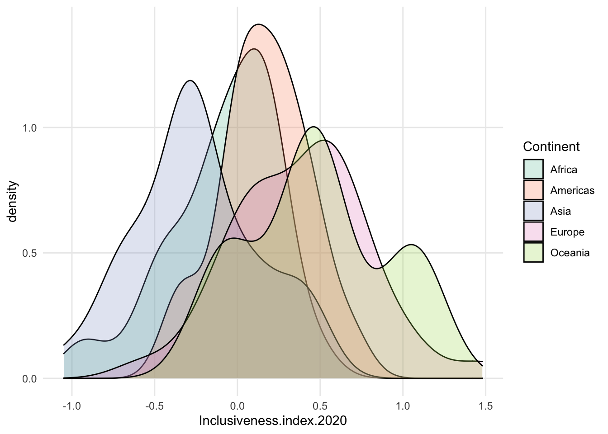
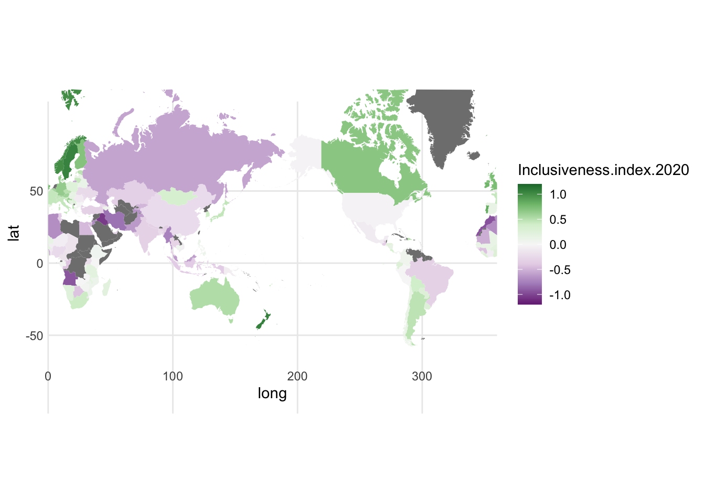

A Datasets
Duke Enrollment
Sample of Duke Enrollment By School dataset, Table A.1.
| Year | Semester | Origin | Region | Sex | School | Count |
|---|---|---|---|---|---|---|
| 1970 | Fall | Alabama | United States | Female | Trinity | 11 |
| 1970 | Fall | Alabama | United States | Female | Graduate | 7 |
| 1970 | Fall | Alabama | United States | Female | Divinity | 1 |
| 1970 | Fall | Alabama | United States | Female | Law | 1 |
| 1970 | Fall | Alaska | United States | Female | Trinity | 1 |
| 1970 | Fall | Alaska | United States | Female | Graduate | 1 |

Coral Resilience Data
Figure A.2.
## Warning: Removed 1 rows containing missing values
## (geom_point).
FIGURE A.2: Log of tissue loss by snail density
Git Experience
A Behavioral Approach to Understanding the Git Experience
## Warning: Removed 1 row(s) containing missing values
## (geom_path).
## Warning: Removed 3 row(s) containing missing values
## (geom_path).## Joining, by = "system"




## Warning: Removed 15 rows containing non-finite values
## (stat_sum).## `summarise()` has grouped output by 'year_vcs'. You can override using the `.groups` argument.## Warning: Removed 9 rows containing non-finite values
## (stat_sum).## Warning: Removed 3 rows containing missing values
## (geom_point).
## Warning: Removed 15 rows containing missing values
## (geom_point).
## Warning: Removed 15 rows containing missing values
## (geom_point).## Warning: Removed 3 rows containing missing values
## (geom_tile).

Inclusiveness Index
## `geom_smooth()` using formula 'y ~ x'## Warning: Removed 111 rows containing non-finite values
## (stat_smooth).## Warning: Removed 111 rows containing missing values
## (geom_point).## `geom_smooth()` using formula 'y ~ x'## Warning: Removed 109 rows containing non-finite values
## (stat_smooth).## Warning: Removed 109 rows containing missing values
## (geom_point).## `geom_smooth()` using formula 'y ~ x'## Warning: Removed 113 rows containing non-finite values
## (stat_smooth).## Warning: Removed 113 rows containing missing values
## (geom_point).## `geom_smooth()` using formula 'y ~ x'## Warning: Removed 90 rows containing non-finite values
## (stat_smooth).## Warning: Removed 90 rows containing missing values
## (geom_point).## `geom_smooth()` using formula 'y ~ x'## Warning: Removed 90 rows containing non-finite values
## (stat_smooth).
## Warning: Removed 90 rows containing missing values
## (geom_point).## `geom_smooth()` using formula 'y ~ x'## Warning: Removed 113 rows containing non-finite values
## (stat_smooth).## Warning: Removed 113 rows containing missing values
## (geom_point).## `geom_smooth()` using formula 'y ~ x'## Warning: Removed 113 rows containing non-finite values
## (stat_smooth).
## Warning: Removed 113 rows containing missing values
## (geom_point).## `geom_smooth()` using formula 'y ~ x'## Warning: Removed 113 rows containing non-finite values
## (stat_smooth).
## Warning: Removed 113 rows containing missing values
## (geom_point).
## Warning: Removed 113 rows containing non-finite values
## (stat_boxplot).Candidate Demographics
Includes State, Candidate Name, Candidate Party, Office Name, White/Non-White, Race, Gender, Race/Gender Category, Office Level; 4 years (2012, 2014, 2016, 2018), over 40k records